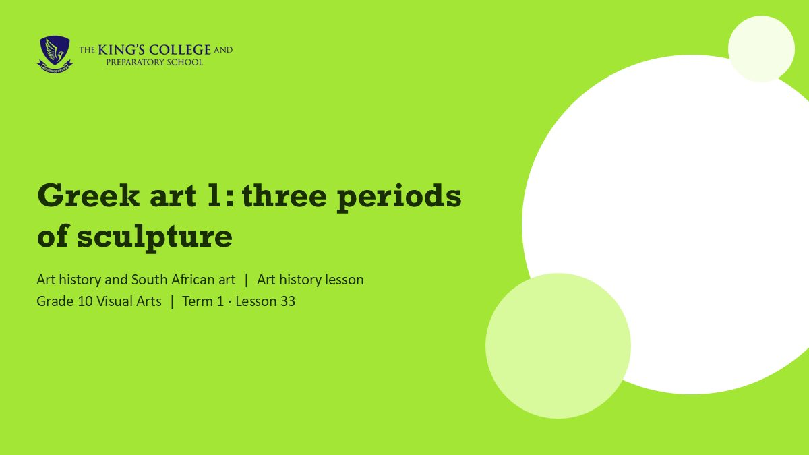

Term 1 · Lesson 33 · Art history lesson
Greek Art 1: Three Periods of Sculpture
Start Here
Today I Will
- Describe the three periods of Greek sculpture
- Explain contrapposto and why it mattered
- Order sculptures by period and justify the order
Think first
Stand up and put all your weight on one leg. What happens to your hips and shoulders?
Words to Know
| Word | Meaning |
|---|---|
| Archaic | The early period of Greek sculpture (c. 600–480 BCE): stiff, frontal figures with a slight smile. |
| Classical | The period of calm, balanced, perfectly proportioned sculpture (c. 480–323 BCE). |
| Hellenistic | The late period (323–31 BCE): dramatic, emotional figures in strong movement. |
| Kouros | An Archaic statue of a standing young man, often a grave marker or offering. |
| Contrapposto | A pose with the weight on one leg, so the hips and shoulders tilt in opposite directions. |
| Idealism | Showing the human figure as perfect and balanced rather than as a real individual. |
Slides

Notes
Archaic, Classical and Hellenistic sculpture: from the kouros to contrapposto to drama and emotion.
Three Periods, Three Ideas of the Body
- Archaic: Kroisos (c. 530 BCE): Marble grave marker. Stiff, frontal stance with one foot forward like Egyptian work, but freestanding, rounder and with the Archaic smile.
- Early Classical: Kritios Boy (c. 480 BCE): One of the first statues to stand in contrapposto. The body seems relaxed and able to move.
- Classical: Doryphoros (orig. c. 450–440 BCE): Polykleitos's model of his Canon of ideal proportions. Calm, balanced, perfect: the ideal, not a portrait.
- Hellenistic: Laocoön and his Sons: A priest and his sons struggle with sea serpents. Twisting bodies and anguished faces show strong emotion.
- Hellenistic: Nike of Samothrace (c. 190 BCE): The goddess of victory lands on a ship's prow; wind-blown drapery creates drama and movement.
How Contrapposto Works
- Weight on one leg: One leg is straight and carries the weight; the other is bent and relaxed.
- Hips tilt: The hip above the weight-bearing leg rises.
- Shoulders answer: The shoulders tilt the opposite way, so the spine forms a gentle S-curve.
- The effect: Tense and relaxed parts balance each other. The figure looks alive, natural and able to move.
Remember
Archaic stands, Classical balances, Hellenistic moves.
Practical
You need: Unlabelled image cards, History booklet, visual journal
Order Three Sculptures and Explain the Changes
- In pairs, put the three unlabelled sculptures in time order: Archaic, Classical, Hellenistic.
- Give one visual clue for each choice, such as the stance, face or movement.
- Check your order against the History booklet.
- On your own, analyse the Doryphoros with the FET formula for form and balance.
- Write two sentences on how Greek sculpture changed from Archaic to Hellenistic.
Test Yourself
- Name the three periods of Greek sculpture in order.
- Explain the term contrapposto.
- Compare a Classical and a Hellenistic sculpture in one way.
Show answers
1. Archaic, Classical, Hellenistic. 2. A pose with the weight on one leg, so the hips and shoulders tilt in opposite directions and the figure looks relaxed and natural. 3. For example: the Doryphoros is calm, balanced and idealised, whereas the Laocoön twists in movement and shows strong emotion and suffering.
Finished Early?
Stick-figure contrapposto
Show how the Greek pose changed with two quick figures.
- Draw two stick figures side by side in your VJ.
- Figure 1 (Archaic): weight spread evenly, hips and shoulders level, one foot forward.
- Figure 2 (Classical): weight on one leg, with lines across the hips and shoulders tilting in opposite directions.
- Label each figure and write one sentence on the effect of contrapposto.